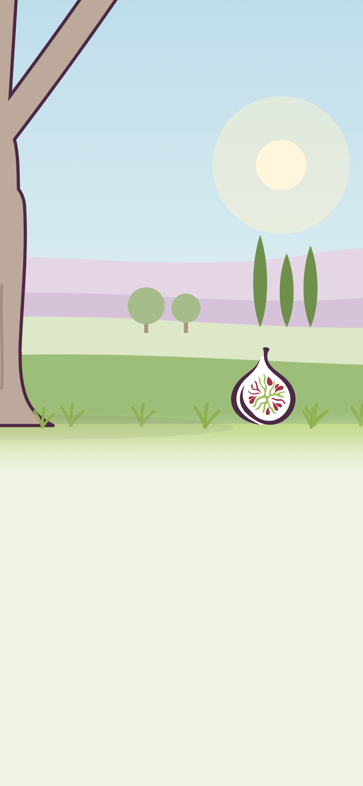
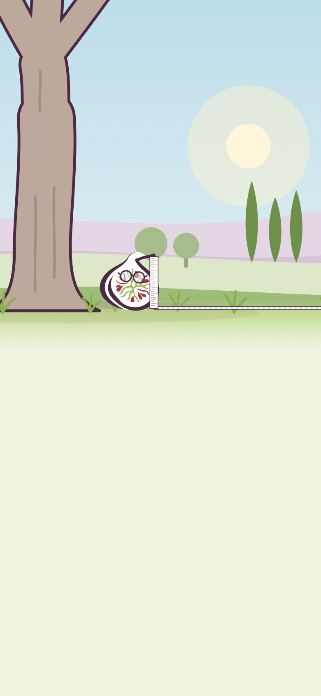

Ficolia
Continuer à prendre soin de soi,
sans vérifier ses flacons dix fois.
Ficolia informe sur la composition des cosmétiques au regard de la grossesse et de l'allaitement.
Ce n'est pas un avis médical. Pour toute question de santé, adressez-vous à un professionnel de santé.
Pour utiliser Ficolia, il faut en accepter les conditions d'utilisation.
Les verdicts sont établis pour une grossesse physiologique.
Conditions d'utilisation — version du [date]